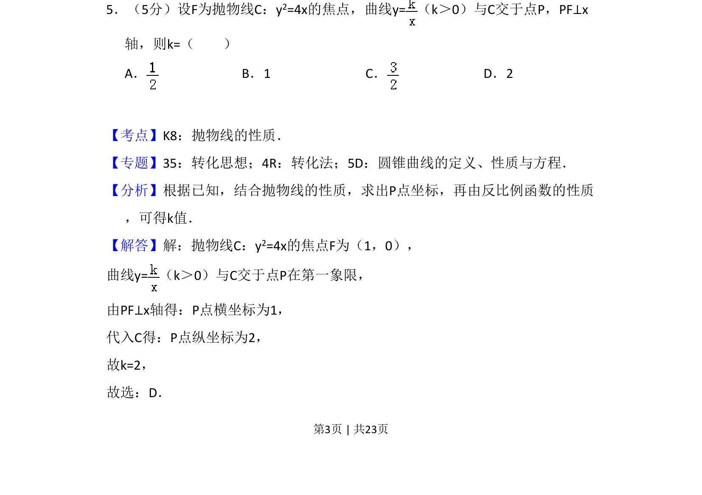
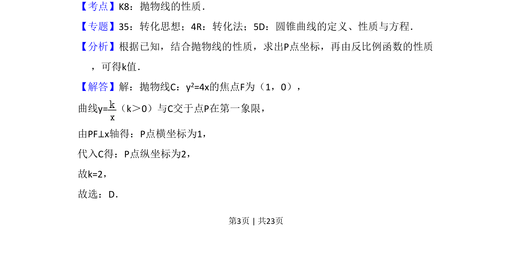
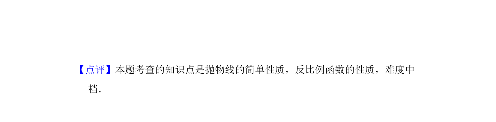

考点：抛物线性质 反比例函数的性质 曲线交点

由抛物线焦点与反比例函数交点及垂直条件，求参数 k 的值。


📄 原 PDF 第 3 页：
素材/真题/吉林/2008-2024·（吉林）数学高考真题/2016年高考数学试卷（文）（新课标Ⅱ）（解析卷）.pdf
5．（5分）设F为抛物线C：y2=4x的焦点，曲线y=（k＞0）与C交于点P，PF⊥x 轴，则k=（ ） A．B．1 C．D．2
【考点】K8：抛物线的性质．菁优网版权所有 【专题】35：转化思想；4R：转化法；5D：圆锥曲线的定义、性质与方程． 【分析】根据已知，结合抛物线的性质，求出P点坐标，再由反比例函数的性质 ，可得k值． 【解答】解：抛物线C：y2=4x的焦点F为（1，0）， 曲线y=（k＞0）与C交于点P在第一象限， 由PF⊥x轴得：P点横坐标为1， 代入C得：P点纵坐标为2， 故k=2， 故选：D．